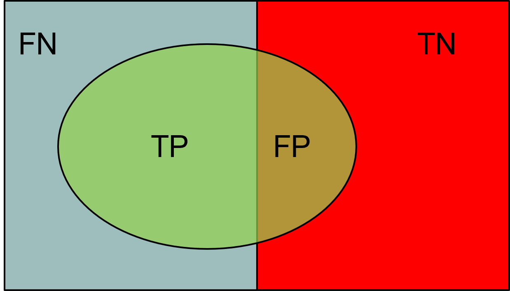
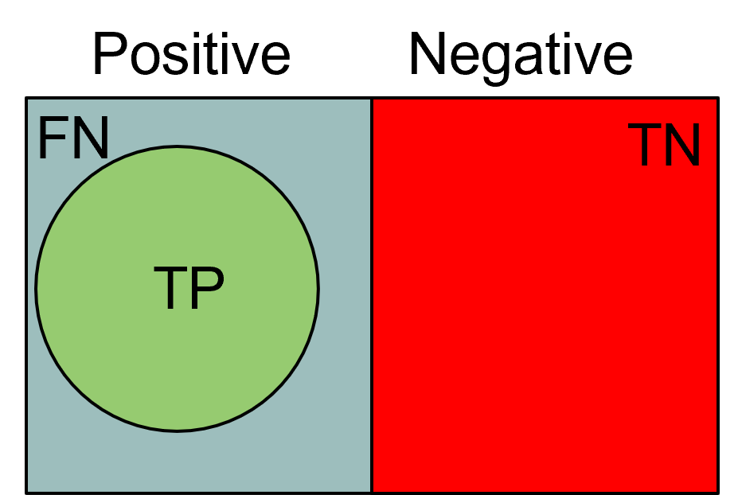
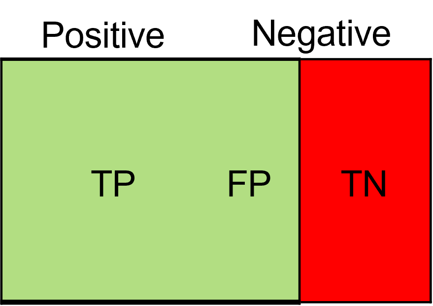

flowchart LR
A[("Training set")]
G[("Test set")]
F[("Predicted class")]
A -->|Induction| B[Learn Model]
C(Learning Algorithm) --> B
B --> D[Model]
G -->D
D -->|Deduction| F
F --> I[Evaluation]
H[(Real Class)] --> I
I --> J((Performance))
style I fill:#f78c8c,stroke:#000
style J fill:#f78c8c,stroke:#000
Machine Learning and Data Mining (Module I)
Data Splits, Evaluation, and Leakage
Matteo Francia
DISI — University of Bologna
m.francia@unibo.it
DISI — University of Bologna
m.francia@unibo.it
Learning objectives
By the end of this lecture, you will be able to:
- Explain why training, validation, and test data have different roles
- Read a confusion matrix and compute the main classification metrics
- Choose a metric from the consequences of false positives and false negatives
- Use cross-validation for model selection without contaminating the final test
- Recognize common forms of data leakage
Learning priorities
| Priority | What students should be able to do |
|---|---|
| Core | Explain train/validation/test splits, confusion matrix, accuracy, precision, recall, F-measure, overfitting, and underfitting |
| Practice | Compute metrics from a small confusion matrix and choose a metric for a business or safety objective |
Why evaluation comes before algorithms
A model is useful only if it generalizes beyond the data used to build it.
- Algorithms learn patterns from training data
- Evaluation estimates whether those patterns will survive on future data
- Validation supports model selection and hyperparameter tuning
- The final test set estimates performance only after choices have been made
The same evaluation vocabulary will return in decision trees, k-NN, neural networks, ensembles, and the final assignment.
Training, validation, and test sets
| Split | Main use | Typical mistake |
|---|---|---|
| Training | Fit model parameters | Reporting training performance as final performance |
| Validation | Choose models, hyperparameters, thresholds, or preprocessing choices | Reusing it until it becomes an implicit training set |
| Test | Estimate final generalization once | Looking at it before the workflow is fixed |
The test set should answer: how well does the chosen workflow perform on unseen data?
Model evaluation
Metrics for model evaluation
The confusion matrix compares the predicted class with the actual class.
- \(TP\) (true positive): actual positive, predicted positive
- \(FN\) (false negative): actual positive, predicted negative
- \(FP\) (false positive): actual negative, predicted positive
- \(TN\) (true negative): actual negative, predicted negative
| Predicted \(\downarrow\) / Actual \(\rightarrow\) | Class=+ | Class=- |
|---|---|---|
| Class=+ | TP | FP |
| Class=- | FN | TN |
For \(n\) classes, the confusion matrix has size \(n\times n\).
Real-world example: card-payment fraud
Define positive as a fraudulent payment and negative as a legitimate payment.
| Example | Actual class | Model prediction | Result |
|---|---|---|---|
| A stolen-card payment is correctly flagged | Fraud | Fraud | True positive |
| A legitimate payment is incorrectly blocked | Legitimate | Fraud | False positive |
| A fraudulent payment is incorrectly approved | Fraud | Legitimate | False negative |
| A normal grocery payment is correctly approved | Legitimate | Legitimate | True negative |
- True means that the prediction matches reality
- False means that the prediction does not match reality
- Positive and negative name the classes; they do not mean good and bad
TP and TN are correct predictions; FP and FN are errors with potentially different costs.
Accuracy
Accuracy is the most widely used metric to synthesize the information of a confusion matrix.
\(Accuracy=\frac{TP + TN}{TP + TN + FP + FN}\)
Equally, the frequency of the error could be used.
\(Error~rate=\frac{FP + FN}{TP + TN + FP + FN}\)
Accuracy limitations
Accuracy is not an appropriate metric if the classes contain a very different number of records. Consider a binary classification problem in which
- #Record of class 0 = 9990
- #Record of class 1 = 10
A model that always returns class 0 will have an accuracy of \(\frac{9990}{10000}\) = 99.9%
In the case of binary classification problems, the class “rare” is also called a positive class.
Precision and recall
Precision and recall answer different questions about the positive class:
- Precision (\(Precision = \frac{TP}{TP + FP}\)): among predicted positives, how many are actually positive?
- High precision means few false positives.
- Recall (\(Recall = \frac{TP}{TP + FN}\)): among actual positives, how many did the model detect?
- High recall means few false negatives.

Outcome of classification
Prioritize precision when false positives are costly
Precision asks: when the model predicts positive, how often is it correct?
Prefer higher precision when a positive prediction triggers an expensive, disruptive, or irreversible action.
Examples:
- A spam filter that automatically deletes messages
- A fraud system that automatically blocks card payments
- A moderation system that automatically removes content
These systems should hesitate before taking positive action against a negative case.
Prioritize recall when false negatives are costly
Recall asks: of all real positive cases, how many did the model find?
Prefer higher recall when missing a positive case creates danger or a major loss.
Examples:
- Cancer or infectious-disease screening
- Fraud alerts sent to a human investigator
- Fire, intrusion, or safety-defect detection
The same domain can differ: automatic fraud blocking favors precision, while a fraud-review queue favors recall. Choose the metric and threshold from the consequences of FP and FN.
Precision and recall
\(Precision = 1\) if there are no false positives: every predicted positive is actually positive.

\(Recall = 1\) if there are no false negatives: every actual positive is detected.

If both equal 1, the model makes neither false-positive nor false-negative errors.
F-measure
A metric that summarizes precision and recall is called the F-measure (\(\text{F-measure} = \frac{2 \cdot Precision \cdot Recall}{Precision + Recall} = \frac{2 \cdot TP}{2 \cdot TP + FP + FN}\)).
F-measure represents the harmonic mean of precision and recall.
- The harmonic average between two x and y numbers tends to be close to the smallest of the two numbers.
- So if the harmonic average is high, it means both precision and recall are.
- … so there have been no false negatives or false positives
Cross validation
- Partition the records into \(k\) folds of similar size
- For each fold:
- train on the other \(k-1\) folds
- evaluate on the held-out fold
- Cross-validation is often used for hyperparameter tuning:
- repeat the same \(k\)-fold procedure for each candidate configuration
- compare configurations by their average validation performance
- prefer configurations that perform well and have acceptable variability across folds
- The final test set is still kept aside and used only once, after the hyperparameters have been selected
Cross validation

Cross validation
- CAUTION: cross-validation creates \(k\) different classifiers
- validation indicates whether the classifier type and its parameters are appropriate for the problem
- Built models can differ depending on the records in each training fold
Cross validation

Cross validation
- This gives \(k\) performance values, one for each held-out fold
- Report the average performance to estimate how well the model configuration generalizes
- Also report the standard deviation across folds:
- low standard deviation means the result is stable across different train/test splits
- high standard deviation means performance depends strongly on which records end up in the fold
Cross validation

Cross validation
Classification errors
- Training error: are mistakes that are made on the training set
- Generalization error: errors are made on the test set (i.e., records that have not been trained on the system).
- Underfitting: The model is too simple and does not allow a good classification of the training set or test set
- Overfitting: The model is too complex, it allows a good classification of the training set, but a poor classification of the test set
- The model fails to generalize because it is based on the specific peculiarities of the training set that are not found in the test set
Underfitting and overfitting


- A model that is too simple misses real structure
- A model that is too flexible can memorize noise
- The goal is not perfect training performance, but useful generalization
Failure case: overfitting to noise

The boundaries of the areas are distorted due to noise
Failure case: insufficient training coverage
Lack of points at the bottom of the chart makes it difficult to find a proper classification for that portion of the region.

Overfitting
Data leakage
Data leakage happens when information unavailable at prediction time influences training or model selection.
Common examples:
- Scaling or imputing using the full dataset before splitting
- Selecting features using the test labels
- Using future information to predict the past
- Repeatedly tuning decisions after inspecting the test set
Rule: fit preprocessing and model choices inside the training/validation workflow, then evaluate once on the untouched test set.
Summary
Before asking which algorithm is best, define how “best” will be measured.
- Keep training, validation, and test roles separate
- Choose metrics from the consequences of FP and FN
- Use cross-validation for model selection, not for final proof
- Treat leakage as a workflow error, not as a small technical detail
- Report final performance only on untouched test data
Matteo Francia - Machine Learning and Data Mining (Module I) - A.Y. 2026/27